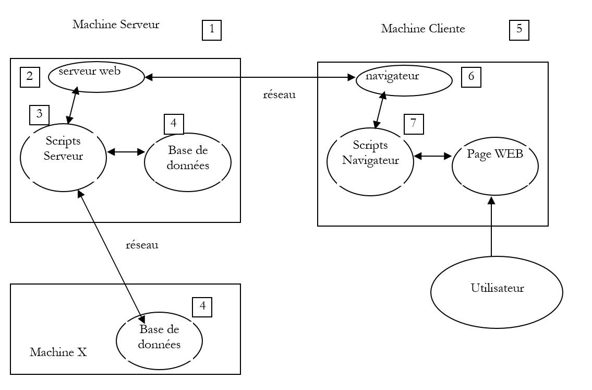
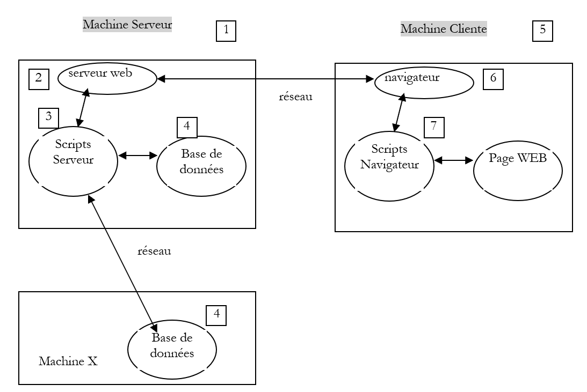
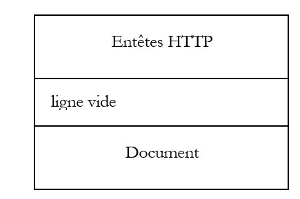
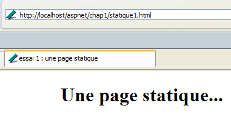
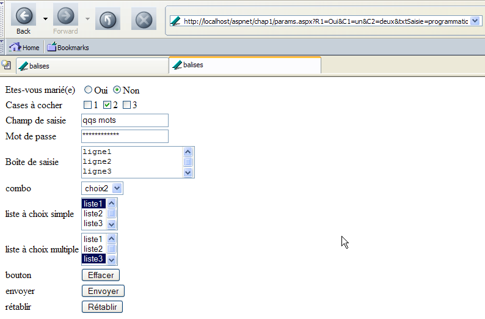

2. الأساسيات
في هذا الفصل، نقدم أساسيات برمجة الويب. الهدف الأساسي منه هو تقديم المبادئ الأساسية لبرمجة الويب، والتي لا تعتمد على تقنية معينة مستخدمة لتنفيذها. ويتضمن العديد من الأمثلة التي نشجعك على تجربتها من أجل "استيعاب" فلسفة تطوير الويب تدريجيًا. وترد قائمة بالأدوات المجانية اللازمة لتجربتها في نهاية الوثيقة في الملحق المعنون "أدوات الويب".
2.1. مكونات تطبيق الويب
الخادم

جهاز العميل15
الرقم | الدور | أمثلة شائعة |
نظام تشغيل الخادم | Linux، Windows | |
خادم الويب | أباتشي (لينكس، ويندوز) IIS (NT)، PWS (Win9x)، Cassini (Windows + منصة .NET) | |
نصوص برمجية من جانب الخادم. يمكن تنفيذها بواسطة وحدات الخادم أو بواسطة برامج خارجية (CGI). | PERL (أباتشي، IIS، PWS) VBSCRIPT (IIS، PWS) JAVASCRIPT (IIS، PWS) PHP (Apache، IIS، PWS) JAVA (Apache، IIS، PWS) C#، VB.NET (IIS) | |
قاعدة البيانات - يمكن أن تكون على نفس الجهاز الذي يستخدمها البرنامج أو على جهاز آخر عبر الإنترنت. | Oracle (Linux، Windows) MySQL (Linux، Windows) Postgres (Linux، Windows) Access (ويندوز) SQL Server (ويندوز) | |
نظام تشغيل العميل | Linux، Windows | |
متصفح الويب | نتسكيب، إنترنت إكسبلورر، موزيلا، أوبرا | |
نصوص برمجية من جانب العميل يتم تنفيذها داخل المتصفح. لا يمكن لهذه النصوص البرمجية الوصول إلى أقراص كمبيوتر العميل. | VBScript (IE) JavaScript (IE، Netscape) PerlScript (IE) تطبيقات Java الصغيرة |
2.2. تبادل البيانات في تطبيق ويب مع نموذج

الخادمجهاز العميل
الرقم | الدور |
يطلب المتصفح عنوان URL لأول مرة (http://machine/url). لا يتم تمرير أي معلمات. | |
يرسل خادم الويب صفحة الويب الخاصة بعنوان URL هذا. قد تكون هذه الصفحة ثابتة أو يتم إنشاؤها ديناميكيًا بواسطة برنامج نصي من جانب الخادم (SA) قد يكون استخدم محتوى من قواعد البيانات (SB، SC). هنا، سيكتشف البرنامج النصي أن عنوان URL قد طُلب بدون أي معلمات وسيقوم بإنشاء صفحة الويب الأولية. يتلقى المتصفح الصفحة ويعرضها (CA). قد تكون البرامج النصية من جانب المتصفح (CB) قد عدلت الصفحة الأولية التي أرسلها الخادم. بعد ذلك، من خلال التفاعلات بين المستخدم (CD) والبرامج النصية (CB)، سيتم تعديل صفحة الويب. على وجه الخصوص، سيتم ملء النماذج. | |
يقوم المستخدم بإرسال بيانات النموذج، والتي يتم إرسالها بعد ذلك إلى خادم الويب. يقوم المتصفح بإعادة تحميل عنوان URL الأصلي أو عنوان آخر، حسب الاقتضاء، ويرسل في الوقت نفسه قيم النموذج إلى الخادم. ويمكنه استخدام طريقتين لهذا الغرض: GET و POST. عند استلام طلب العميل، يقوم الخادم بتنفيذ البرنامج النصي (SA) المرتبط بعنوان URL المطلوب، والذي سيكتشف المعلمات ويعالجها. | |
يقوم الخادم بتسليم صفحة الويب التي تم إنشاؤها بواسطة البرنامج (SA، SB، SC). هذه الخطوة مطابقة للخطوة 2 السابقة. ويستمر الاتصال الآن وفقًا للخطوتين 2 و 3. |
2.3. الرموز
فيما يلي، سنفترض أنه تم تثبيت عدد من الأدوات وسنتبنى الرموز التالية:
الرمز | المعنى |
جذر شجرة دليل خادم Apache | |
الدليل الجذري لصفحات الويب التي يقدمها Apache. يجب أن تكون صفحات الويب موجودة ضمن هذا الدليل الجذري. وبالتالي، فإن عنوان URL http://localhost/page1.htm يتوافق مع الملف <apache-DocumentRoot>\page1.htm. | |
جذر شجرة الدليل المرتبطة بالاسم المستعار cgi-bin، حيث يمكن وضع نصوص CGI الخاصة بـ Apache. وبالتالي، فإن عنوان URL http://localhost/cgi-bin/test1.pl يتوافق مع الملف <apache-cgi-bin>\test1.pl. | |
الدليل الجذري لصفحات الويب التي يقدمها IIS أو PWS أو Cassini. يجب أن تكون صفحات الويب موجودة ضمن هذا الدليل الجذري. وبالتالي، فإن عنوان URL http://localhost/page1.htm يتوافق مع الملف <IIS-DocumentRoot>\page1.htm. | |
جذر شجرة دليل لغة Perl. عادةً ما يوجد الملف القابل للتنفيذ perl.exe في <perl>\bin. | |
جذر شجرة دليل PHP. عادةً ما يوجد الملف القابل للتنفيذ php.exe في <php>. | |
جذر شجرة دليل Java. توجد الملفات التنفيذية المتعلقة بـ Java في <java>\bin. | |
جذر خادم Tomcat. يمكن العثور على أمثلة لـ servlets في <tomcat>\webapps\examples\servlets وأمثلة لصفحات JSP في <tomcat>\webapps\examples\jsp |
بالنسبة لكل من هذه الأدوات، راجع الملحق الذي يوفر إرشادات التثبيت.
2.4. صفحات الويب الثابتة، صفحات الويب الديناميكية
يتم تمثيل الصفحة الثابتة بملف HTML. أما الصفحة الديناميكية، فيتم إنشاؤها "على الفور" بواسطة خادم الويب. في هذا القسم، نقدم اختبارات متنوعة باستخدام خوادم ويب ولغات برمجة مختلفة لإثبات عالمية مفهوم الويب. سنستخدم خادمين للويب: Apache و IIS. على الرغم من أن IIS منتج تجاري، إلا أنه متوفر في نسختين محدودتين أكثر ولكنهما مجانيتان:
- PWS لأجهزة Win9x
- Cassini لأجهزة Windows 2000 وXP
عادةً ما يكون مجلد <IIS-DocumentRoot> هو المجلد [محرك_الأقراص:\inetpub\wwwroot]، حيث يمثل [محرك_الأقراص] القرص (C، D، ...) الذي تم تثبيت IIS عليه. وينطبق الأمر نفسه على PWS. أما بالنسبة لـ Cassini، فإن مجلد <IIS-DocumentRoot> يعتمد على طريقة تشغيل الخادم. يوضح الملحق أنه يمكن تشغيل خادم Cassini في نافذة DOS (أو عبر اختصار) على النحو التالي:
يقبل تطبيق [WebServer]، المعروف أيضًا باسم خادم الويب Cassini، ثلاثة معلمات:
- /port: رقم منفذ خدمة الويب. يمكن أن يكون أي رقم. القيمة الافتراضية هي 80
- /path: المسار الفعلي لمجلد على القرص
- /vpath: المجلد الافتراضي المرتبط بالمجلد الفعلي السابق. لاحظ أن الصيغة ليست /path=path بل /vpath:path، على عكس ما يذكره لوحة المساعدة أعلاه.
إذا تم تشغيل Cassini على النحو التالي:
فإن المجلد P هو جذر شجرة دليل الويب لخادم Cassini. وبالتالي، هذا هو المجلد المحدد بواسطة <IIS-DocumentRoot>. وبالتالي، في المثال التالي:
سيعمل خادم Cassini على المنفذ 80، وجذر دليل <IIS-DocumentRoot> الخاص به هو المجلد [d:\data\devel\webmatrix]. يجب أن تكون صفحات الويب المراد اختبارها موجودة تحت هذا الجذر.
من الآن فصاعدًا، سيتم تمثيل كل تطبيق ويب بملف واحد يمكن إنشاؤه باستخدام أي محرر نصوص. لا يلزم وجود IDE.
2.4.1. صفحة HTML ثابتة (لغة ترميز النص التشعبي)
انظر إلى كود HTML التالي:
<html>
<head>
<title>essai 1 : une page statique</title>
</head>
<body>
<center>
<h1>Une page statique...</h1>
</body>
</html>
التي تنتج صفحة الويب التالية:
الاختبارات

اختبار 1
- بدء تشغيل خادم Apache
- ضع البرنامج النصي test1.html في <apache-DocumentRoot>
- اعرض عنوان URL http://localhost/essai1.html في متصفح
- أوقف خادم Apache
الاختبار 2
- ابدأ تشغيل خادم IIS/PWS/Cassini
- ضع البرنامج النصي test1.html في <IIS-DocumentRoot>
- اعرض عنوان URL http://localhost/essai1.html في متصفح
2.4.2. صفحة ASP (صفحات الخادم النشطة)
البرنامج النصي test2.asp:
<html>
<head>
<title>essai 1 : une page asp</title>
</head>
<body>
<center>
<h1>Une page asp générée dynamiquement par le serveur PWS</h1>
<h2>Il est <% =time %></h2>
<br>
A chaque fois que vous rafraîchissez la page, l'heure change.
</body>
</html>
ينتج الصفحة التالية:

الاختبار
- بدء تشغيل خادم IIS/PWS
- ضع البرنامج النصي essai2.asp في <IIS-DocumentRoot>
- اطلب عنوان URL http://localhost/essai2.asp باستخدام متصفح
2.4.3. نص برمجي P ERL (لغة الاستخراج والإبلاغ العملية)
البرنامج النصي essai3.pl:
#!d:\perl\bin\perl.exe
($secondes,$minutes,$heure)=localtime(time);
print <<HTML
Content-type: text/html
<html>
<head>
<title>essai 1 : un script Perl</title>
</head>
<body>
<center>
<h1>Une page générée dynamiquement par un script Perl</h1>
<h2>Il est $heure:$minutes:$secondes</h2>
<br>
A chaque fois que vous rafraîchissez la page, l'heure change.
</body>
</html>
HTML
;
السطر الأول هو مسار الملف القابل للتنفيذ perl.exe. قد تحتاج إلى تعديله إذا لزم الأمر. بمجرد تنفيذه بواسطة خادم الويب، ينتج البرنامج النصي الصفحة التالية:

خادم
- خادم الويب: Apache
- للإشارة، اطلع على ملف التكوين srm.conf أو httpd.conf (حسب إصدار Apache لديك) في <apache>\confs وابحث عن السطر الذي يذكر cgi-bin لتحديد دليل <apache-cgi-bin> حيث يجب أن تضع essai3.pl.
- ضع البرنامج النصي essai3.pl في <apache-cgi-bin>
- اطلب عنوان URL http://localhost/cgi-bin/essai3.pl
لاحظ أن تحميل صفحة Perl يستغرق وقتًا أطول من تحميل صفحة ASP. ويرجع ذلك إلى أن البرنامج النصي Perl يتم تنفيذه بواسطة مترجم Perl الذي يجب تحميله قبل أن يتمكن من تشغيل البرنامج النصي. ولا يبقى في الذاكرة بشكل دائم.
2.4.4. نص برمجي PHP
البرنامج النصي essai4.php
<html>
<head>
<title>essai 4 : une page php</title>
</head>
<body>
<center>
<h1>Une page PHP générée dynamiquement</h1>
<h2>
<?
$maintenant=time();
echo date("j/m/y, h:i:s",$maintenant);
?>
</h2>
<br>
A chaque fois que vous rafraîchissez la page, l'heure change.
</body>
</html>
يُنشئ البرنامج النصي السابق صفحة الويب التالية:

اختبارات
اختبار 1
- تحقق من ملف التكوين srm.conf أو ملف httpd.conf الخاص بـ Apache في <Apache>\confs
- للإشارة، تحقق من أسطر تكوين PHP
- ابدأ تشغيل خادم Apache
- ضع essai4.php في <apache-DocumentRoot>
- اطلب عنوان URL http://localhost/essai4.php
اختبار 2
- قم بتشغيل خادم IIS/PWS
- للإشارة، تحقق من تكوين PWS فيما يتعلق بـ PHP
- ضع essai4.php في <IIS-DocumentRoot>\php
- طلب عنوان URL http://localhost/essai4.php
2.4.5. نص برمجي JSP
نص heure.jsp
<% //programme Java affichant l'heure %>
<%@ page import="java.util.*" %>
<%
// code JAVA pour calculer l'heure
Calendar calendrier=Calendar.getInstance();
int heures=calendrier.get(Calendar.HOUR_OF_DAY);
int minutes=calendrier.get(Calendar.MINUTE);
int secondes=calendrier.get(Calendar.SECOND);
// heures, minutes, secondes sont des variables globales
// qui pourront être utilisées dans le code HTML
%>
<% // code HTML %>
<html>
<head>
<title>Page JSP affichant l'heure</title>
</head>
<body>
<center>
<h1>Une page JSP générée dynamiquement</h1>
<h2>Il est <%=heures%>:<%=minutes%>:<%=secondes%></h2>
<br>
<h3>A chaque fois que vous rechargez la page, l'heure change</h3>
</body>
</html>
بمجرد تنفيذ هذا البرنامج النصي بواسطة خادم الويب، ينتج عنه الصفحة التالية:

الاختبارات
- ضع البرنامج النصي heure.jsp في <tomcat>\jakarta-tomcat\webapps\examples\jsp (Tomcat 3.x) أو في <tomcat>\webapps\examples\jsp (Tomcat 4.x)
- ابدأ تشغيل خادم Tomcat
- اطلب عنوان URL http://localhost:8080/examples/jsp/heure.jsp
2.4.6. صفحة ASP.NET
البرنامج النصي heure1.aspx:
<html>
<head>
<title>Démo asp.net </title>
</head>
<body>
Il est <% =Date.Now.ToString("hh:mm:ss") %>
</body>
</html>
بمجرد تنفيذه بواسطة خادم الويب، يقوم هذا البرنامج النصي بإنشاء الصفحة التالية:

يتطلب هذا الاختبار جهازًا يعمل بنظام Windows تم تثبيت منصة .NET عليه (انظر الملحق).
- ضع البرنامج النصي heure1.aspx في <IIS-DocumentRoot>
- ابدأ تشغيل خادم IIS/CASSINI
- اطلب عنوان URL http://localhost/heure1.aspx
2.4.7. الخلاصة
أظهرت الأمثلة السابقة ما يلي:
- يمكن إنشاء صفحة HTML ديناميكيًا بواسطة برنامج. وهذا هو جوهر برمجة الويب.
- يمكن أن تختلف اللغات وخوادم الويب المستخدمة. حاليًا، نلاحظ الاتجاهات الرئيسية التالية:
- تركيبات Apache/PHP (Windows، Linux) و IIS/PHP (Windows)
- تقنية ASP.NET على منصات Windows، والتي تجمع بين خادم IIS ولغة .NET (C#، VB.NET، إلخ)
- تقنية Java servlet وصفحات JSP التي تعمل على خوادم مختلفة (Tomcat، Apache، IIS) وعلى منصات مختلفة (Windows، Linux).
2.5. البرامج النصية من جانب المتصفح
يمكن أن تحتوي صفحة HTML على نصوص برمجية يتم تنفيذها بواسطة المتصفح. هناك العديد من لغات البرمجة النصية من جانب المتصفح. فيما يلي بعض منها:
اللغة | المتصفحات المدعومة |
VBScript | IE |
جافا سكريبت | IE، Netscape |
PerlScript | IE |
جافا | IE، Netscape |
دعونا نلقي نظرة على بعض الأمثلة.
2.5.1. صفحة ويب تحتوي على نص VBScript، من جانب المتصفح
صفحة vbs1.html
<html>
<head>
<title>essai : une page web avec un script vb</title>
<script language="vbscript">
function reagir
alert "Vous avez cliqué sur le bouton OK"
end function
</script>
</head>
<body>
<center>
<h1>Une page Web avec un script VB</h1>
<table>
<tr>
<td>Cliquez sur le bouton</td>
<td><input type="button" value="OK" name="cmdOK" onclick="reagir"></td>
</tr>
</table>
</body>
</html>
لا تحتوي صفحة HTML أعلاه على كود HTML فحسب، بل تحتوي أيضًا على برنامج يُقصد به أن يتم تنفيذه بواسطة المتصفح الذي يقوم بتحميل هذه الصفحة. والكود هو كما يلي:
<script language="vbscript">
function reagir
alert "Vous avez cliqué sur le bouton OK"
end function
</script>
تُستخدم علامتا <script></script> لتحديد نطاق البرامج النصية داخل صفحة HTML. يمكن كتابة هذه البرامج النصية بلغات مختلفة، وتحدد سمة اللغة في علامة <script> اللغة المستخدمة. في هذه الحالة، هي لغة VBScript. لن ندخل في تفاصيل هذه اللغة. يحدد البرنامج النصي أعلاه دالة تسمى react تعرض رسالة. متى يتم استدعاء هذه الدالة؟ يوضح لنا ذلك السطر التالي من كود HTML:
تحدد سمة onclick اسم الدالة التي سيتم استدعاؤها عندما ينقر المستخدم على زر OK. بمجرد أن يقوم المتصفح بتحميل هذه الصفحة وينقر المستخدم على زر OK، ستظهر الصفحة التالية:

الاختبارات
إن Internet Explorer هو المتصفح الوحيد القادر على تنفيذ نصوص VBScript. أما Netscape فيتطلب ملحقات إضافية للقيام بذلك. يمكننا إجراء الاختبارات التالية:
- خادم Apache
- نص vbs1.html في <apache-DocumentRoot>
- اطلب عنوان URL http://localhost/vbs1.html باستخدام Internet Explorer
- خادم IIS/PWS
- نص برمجي vbs1.html في <pws-DocumentRoot>
- اطلب عنوان URL http://localhost/vbs1.html باستخدام Internet Explorer
صفحة ويب تحتوي على نص برمجي JavaScript، على جانب المتصفح
La page : js1.html
<html>
<head>
<title>essai 4 : une page web avec un script Javascript</title>
<script language="javascript">
function reagir(){
alert ("Vous avez cliqué sur le bouton OK");
}
</script>
</head>
<body>
<center>
<h1>Une page Web avec un script Javascript</h1>
<table>
<tr>
<td>Cliquez sur le bouton</td>
<td><input type="button" value="OK" name="cmdOK" onclick="reagir()"></td>
</tr>
</table>
</body>
</html>
هذه الصفحة مطابقة للصفحة السابقة، باستثناء أننا استبدلنا VBScript بـ JavaScript. تتميز JavaScript بأنها مدعومة من قبل كل من Internet Explorer و Netscape. يؤدي تشغيل هذا الكود إلى نفس النتائج:

الاختبارات
- خادم Apache
- نص js1.html في <apache-DocumentRoot>
- اطلب عنوان URL http://localhost/js1.html باستخدام Internet Explorer أو Netscape
- خادم IIS/PWS
- نص برمجي js1.html في <pws-DocumentRoot>
- اطلب عنوان URL http://localhost/js1.html باستخدام Internet Explorer أو Netscape
2.6. الاتصال بين العميل والخادم
لنعد إلى الرسم التخطيطي الأولي الذي يوضح مكونات تطبيق الويب:

جهاز الخادم
هنا، نركز على التبادلات بين جهاز العميل وجهاز الخادم. تحدث هذه التبادلات عبر شبكة، ومن المفيد مراجعة الهيكل العام للتبادلات بين جهازين بعيدين.
2.6.1. نموذج OSI
يصف نموذج الشبكة المفتوحة المعروف باسم OSI (نموذج مرجعي لربط الأنظمة المفتوحة)، الذي حددته المنظمة الدولية للتوحيد القياسي (ISO)، شبكة مثالية يمكن فيها تمثيل الاتصال بين الأجهزة بنموذج مكون من سبع طبقات:

تتلقى كل طبقة خدمات من الطبقة التي تحتها وتقدم خدماتها الخاصة إلى الطبقة التي فوقها. لنفترض أن تطبيقين موجودين على جهازين مختلفين A و B يريدان التواصل: يفعلان ذلك في طبقة التطبيقات. لا يحتاجان إلى معرفة كل تفاصيل كيفية عمل الشبكة: يمرر كل تطبيق المعلومات التي يرغب في إرسالها إلى الطبقة التي تحتها: طبقة العرض. وبالتالي، لا يحتاج التطبيق سوى إلى معرفة قواعد التفاعل مع طبقة العرض. وبمجرد وصول المعلومات إلى طبقة العرض، يتم تمريرها وفقًا لقواعد أخرى إلى طبقة الجلسة، وهكذا دواليك، حتى تصل المعلومات إلى الوسيط المادي ويتم إرسالها فعليًا إلى الجهاز الوجهة. وهناك، ستخضع لعملية عكسية لما خضعت له على الجهاز المرسل.
في كل طبقة، تقوم عملية الإرسال المسؤولة عن إرسال المعلومات بإرسالها إلى عملية استقبال على الجهاز الآخر الذي ينتمي إلى نفس الطبقة. وتقوم بذلك وفقًا لقواعد معينة تُعرف باسم بروتوكول الطبقة. وبالتالي، نحصل على مخطط الاتصال النهائي التالي:

أدوار الطبقات المختلفة هي كما يلي:
تضمن نقل البتات عبر وسيط مادي. تشمل هذه الطبقة معدات طرفية لمعالجة البيانات (DPTE) مثل المحطات الطرفية أو أجهزة الكمبيوتر، بالإضافة إلى معدات إنهاء دوائر البيانات (DCTE) مثل أجهزة التضمين/التفكيك، وأجهزة التعدد، والمركّزات. النقاط الرئيسية في هذا المستوى هي: . اختيار ترميز المعلومات (تناظري أو رقمي) . اختيار وضع الإرسال (متزامن أو غير متزامن). | |
يخفي الخصائص المادية للطبقة المادية. يكتشف أخطاء الإرسال ويصححها. | |
يدير المسار الذي يجب أن تتبعه المعلومات المرسلة عبر الشبكة. وهذا ما يسمى بالتوجيه: تحديد المسار الذي يجب أن تسلكه المعلومات للوصول إلى وجهتها. | |
تتيح الاتصال بين تطبيقين، في حين أن الطبقات السابقة كانت تسمح فقط بالاتصال بين الأجهزة. يمكن أن تكون إحدى الخدمات التي توفرها هذه الطبقة هي تعدد الإرسال: يمكن لطبقة النقل استخدام اتصال شبكة واحد (من جهاز إلى جهاز) لنقل البيانات الخاصة بتطبيقات متعددة. | |
توفر هذه الطبقة خدمات تسمح للتطبيق بفتح جلسة عمل والحفاظ عليها على جهاز بعيد. | |
ويهدف هذا النموذج إلى توحيد طريقة عرض البيانات عبر الأجهزة المختلفة. وبالتالي، فإن البيانات الصادرة عن الجهاز «أ» سيتم «تنسيقها» بواسطة طبقة العرض في الجهاز «أ» وفقًا لتنسيق قياسي قبل إرسالها عبر الشبكة. وعند وصولها إلى طبقة العرض في الجهاز «ب» المقصود، الذي سيتعرف عليها بفضل تنسيقها القياسي، سيتم تنسيقها بطريقة مختلفة حتى يتمكن التطبيق الموجود على الجهاز «ب» من التعرف عليها. | |
في هذا المستوى، نجد التطبيقات التي تكون عمومًا قريبة من المستخدم، مثل البريد الإلكتروني أو نقل الملفات. |
2.6.2. نموذج TCP/IP
نموذج OSI هو نموذج مثالي. تقترب مجموعة بروتوكولات TCP/IP منه على النحو التالي:

- تؤدي واجهة الشبكة (بطاقة الشبكة في الكمبيوتر) وظائف الطبقتين 1 و 2 من نموذج OSI
- تؤدي طبقة IP (بروتوكول الإنترنت) وظائف الطبقة 3 (الشبكة)
- تؤدي طبقة TCP (بروتوكول التحكم في الإرسال) أو UDP (بروتوكول مخطط بيانات المستخدم) وظائف الطبقة 4 (النقل). يضمن بروتوكول TCP وصول حزم البيانات المتبادلة بين الأجهزة إلى وجهتها. وإذا لم تصل، فإنه يعيد إرسال الحزم المفقودة. لا يؤدي بروتوكول UDP هذه المهمة، لذا فإن الأمر متروك لمطور التطبيق للقيام بذلك. ولهذا السبب، على الإنترنت — التي ليست شبكة موثوقة بنسبة 100٪ — فإن بروتوكول TCP هو الأكثر استخدامًا. ويُشار إلى هذا باسم شبكة TCP-IP.
- تغطي طبقة التطبيق وظائف الطبقات من 5 إلى 7 في نموذج OSI.
تقع تطبيقات الويب في طبقة التطبيقات، وبالتالي تعتمد على بروتوكولات TCP/IP. تتبادل طبقات التطبيقات في أجهزة العميل والخادم الرسائل، التي يتم بعد ذلك تسليمها إلى الطبقات من 1 إلى 4 من النموذج لتوجيهها إلى وجهتها. للتواصل مع بعضهما البعض، يجب أن "تتحدث" طبقات التطبيقات في كلا الجهازين نفس اللغة أو البروتوكول. يُسمى البروتوكول الذي تستخدمه تطبيقات الويب HTTP (بروتوكول نقل النص التشعبي). وهو بروتوكول نصي، مما يعني أن الأجهزة تتبادل أسطرًا من النص عبر الشبكة للتواصل. هذه التبادلات موحدة، مما يعني أن العميل لديه مجموعة من الرسائل لإخبار الخادم بالضبط بما يريده، وأن الخادم لديه أيضًا مجموعة من الرسائل لتزويد العميل برده. يتخذ تبادل الرسائل هذا الشكل التالي:

العميل --> الخادم
عندما يرسل العميل طلبًا إلى خادم الويب، فإنه يرسل
- أسطر نصية بتنسيق HTTP للإشارة إلى ما يريده
- سطر فارغ
- وثيقة اختيارية
الخادم --> العميل
عندما يرد الخادم على العميل، فإنه يرسل
- أسطر نصية بتنسيق HTTP للإشارة إلى ما يرسله
- سطر فارغ
- اختياريًا مستند
وبالتالي، تتبع الاتصالات نفس التنسيق في كلا الاتجاهين. في كلتا الحالتين، يمكن إرسال مستند، على الرغم من أنه من النادر أن يرسل العميل مستندًا إلى الخادم. لكن بروتوكول HTTP يسمح بذلك. وهذا ما يمكّن، على سبيل المثال، مشتركي مزود خدمة الإنترنت من تحميل مستندات متنوعة إلى موقعهم الشخصي الذي يستضيفه ذلك المزود. يمكن أن تكون المستندات المتبادلة من أي نوع. لنفترض أن متصفحًا يطلب صفحة ويب تحتوي على صور:
- يتصل المتصفح بخادم الويب ويطلب الصفحة التي يريدها. يتم تحديد الموارد المطلوبة بشكل فريد بواسطة عناوين URL (محددات مواقع الموارد الموحدة). يرسل المتصفح رؤوس HTTP فقط ولا يرسل أي مستند.
- يستجيب الخادم. يرسل أولاً رؤوس HTTP تشير إلى نوع الاستجابة التي يرسلها. قد يكون هذا خطأً إذا كانت الصفحة المطلوبة غير موجودة. إذا كانت الصفحة موجودة، سيشير الخادم في رؤوس HTTP لاستجابته إلى أنه سيرسل مستند HTML (لغة ترميز النص التشعبي) بعد ذلك. هذا المستند عبارة عن سلسلة من أسطر النص بتنسيق HTML. يحتوي نص HTML على علامات (علامات) تزود المتصفح بتعليمات حول كيفية عرض النص.
- يعرف العميل من رؤوس HTTP الخاصة بالخادم أنه سيتلقى مستند HTML. وسيقوم بتحليل هذا المستند وقد يلاحظ أنه يحتوي على مراجع للصور. هذه الصور غير مضمنة في مستند HTML. لذلك، يقوم بإرسال طلب جديد إلى نفس خادم الويب لطلب الصورة الأولى التي يحتاجها. هذا الطلب مطابق للطلب الذي تم إرساله في الخطوة 1، باستثناء أن المورد المطلوب مختلف. سيقوم الخادم بمعالجة هذا الطلب عن طريق إرسال الصورة المطلوبة إلى العميل. هذه المرة، في استجابته، ستحدد رؤوس HTTP أن المستند المرسل هو صورة وليس مستند HTML.
- يسترد العميل الصورة المرسلة. ستتكرر الخطوتان 3 و 4 حتى يحصل العميل (عادةً متصفح) على جميع المستندات اللازمة لعرض الصفحة بأكملها.
2.6.3. بروتوكول HTTP
دعونا نستكشف بروتوكول HTTP من خلال أمثلة. ما الذي يتبادله المتصفح وخادم الويب؟
2.6.3.1. الاستجابة من خادم HTTP
هنا، سنستكشف كيف يستجيب خادم الويب لطلبات عملائه. خدمة الويب أو خدمة HTTP هي خدمة TCP/IP تعمل عادةً على المنفذ 80. يمكن أن تعمل على منفذ مختلف. في هذه الحالة، سيحتاج متصفح العميل إلى تحديد هذا المنفذ في عنوان URL الذي يطلبه. يتبع عنوان URL عمومًا هذا التنسيق:
حيث
البروتوكول | http لخدمة الويب. يمكن للمتصفح أيضًا أن يعمل كعميل لخدمات FTP والأخبار وTelnet وغيرها من الخدمات. |
الجهاز | اسم الجهاز الذي يستضيف خدمة الويب |
المنفذ | منفذ خدمة الويب. إذا كان 80، يمكن حذف رقم المنفذ. هذه هي الحالة الأكثر شيوعًا |
المسار | مسار المورد المطلوب |
معلومات | معلومات إضافية تُرسل إلى الخادم لتوضيح طلب العميل |
ماذا يفعل المتصفح عندما يطلب المستخدم تحميل عنوان URL؟
- يقوم بإنشاء اتصال TCP/IP مع الجهاز والمنفذ المحددين في جزء machine[:port] من عنوان URL. إن إنشاء اتصال TCP/IP يعني إنشاء "قناة" اتصال بين جهازين. وبمجرد إنشاء هذه القناة، ستمر جميع المعلومات المتبادلة بين الجهازين عبرها. ولا يتضمن إنشاء قناة TCP-IP هذه بروتوكول HTTP الخاص بالويب بعد.
- بمجرد إنشاء اتصال TCP-IP، يرسل العميل طلبه إلى خادم الويب عن طريق إرسال أسطر نصية (أوامر) بتنسيق HTTP. يرسل جزء المسار/المعلومات من عنوان URL إلى الخادم
- سيستجيب الخادم بنفس الطريقة ومن خلال نفس الاتصال
- سيقرر أحد الطرفين إغلاق الاتصال. يعتمد هذا على بروتوكول HTTP المستخدم. مع HTTP 1.0، يغلق الخادم الاتصال بعد كل استجابة من استجاباته. وهذا يجبر العميل الذي يحتاج إلى إجراء طلبات متعددة لاسترداد المستندات المختلفة التي تتكون منها صفحة الويب على فتح اتصال جديد لكل طلب، مما يترتب عليه تكلفة. مع بروتوكول HTTP/1.1، يمكن للعميل أن يطلب من الخادم إبقاء الاتصال مفتوحًا حتى يطلب منه إغلاقه. وبالتالي، يمكنه استرداد جميع المستندات الخاصة بصفحة ويب باستخدام اتصال واحد وإغلاق الاتصال بنفسه بمجرد الحصول على آخر مستند. سيكتشف الخادم هذا الإغلاق ويغلق الاتصال أيضًا.
لفحص التبادلات بين العميل وخادم الويب، سنستخدم أداة تسمى curl. Curl هو تطبيق DOS يسمح لك بالعمل كعميل لخدمات الإنترنت التي تدعم بروتوكولات مختلفة (HTTP، FTP، TELNET، GOPHER، إلخ). Curl متاح على الرابط http://curl.haxx.se/. هنا، يفضل تنزيل إصدار Windows win32-nossl، حيث يتطلب إصدار win32-ssl مكتبات DLL إضافية غير مضمنة في حزمة curl. تحتوي هذه الحزمة على مجموعة من الملفات التي تحتاج ببساطة إلى استخراجها إلى مجلد سنسميه من الآن فصاعدًا <curl>. يحتوي هذا المجلد على ملف قابل للتنفيذ باسم [curl.exe]. سيكون هذا هو عميلنا للاستعلام عن خوادم الويب. افتح نافذة موجه الأوامر وانتقل إلى مجلد <curl>:
dos>dir curl.exe
22/03/2004 13:29 299 008 curl.exe
E:\curl2>curl
curl: try 'curl --help' for more information
dos>curl --help | more
Usage: curl [options...] <url>
Options: (H) means HTTP/HTTPS only, (F) means FTP only
-a/--append Append to target file when uploading (F)
-A/--user-agent <string> User-Agent to send to server (H)
--anyauth Tell curl to choose authentication method (H)
-b/--cookie <name=string/file> Cookie string or file to read cookies from (H)
--basic Enable HTTP Basic Authentication (H)
-B/--use-ascii Use ASCII/text transfer
-c/--cookie-jar <file> Write cookies to this file after operation (H)
....
دعونا نستخدم هذا التطبيق للاستعلام عن خادم ويب وفحص التبادلات بين العميل والخادم. سنكون في الموقف التالي:

يمكن أن يكون خادم الويب أي خادم. هنا، نهدف إلى اكتشاف التبادلات التي ستحدث بين عميل الويب curl وخادم الويب. في السابق، أنشأنا صفحة HTML ثابتة كما يلي:
<html>
<head>
<title>essai 1 : une page statique</title>
</head>
<body>
<center>
<h1>Une page statique...</h1>
</body>
</html>
التي نعرضها في متصفح:

يمكننا أن نرى أن عنوان URL المطلوب هو: http://localhost/aspnet/chap1/statique1.html. وبالتالي، فإن خادم الويب هو localhost (=الجهاز المحلي) على المنفذ 80. إذا قمنا بعرض مصدر HTML لهذه الصفحة (عرض/المصدر)، فسنرى نص HTML الذي تم إنشاؤه في الأصل:

الآن دعونا نستخدم عميل CURL الخاص بنا لطلب نفس عنوان URL:
dos>curl http://localhost/aspnet/chap1/statique1.html
<html>
<head>
<title>essai 1 : une page statique</title>
</head>
<body>
<center>
<h1>Une page statique...</h1>
</body>
</html>
يمكننا أن نرى أن خادم الويب أرسل إليها مجموعة من الأسطر النصية التي تمثل كود HTML للصفحة المطلوبة. ذكرنا سابقًا أن استجابة خادم الويب تأخذ الشكل التالي:

ومع ذلك، لم نرَ هنا رؤوس HTTP. ويرجع ذلك إلى أن [curl] لا يعرضها بشكل افتراضي. تتيح لك الخيار --include عرضها:
E:\curl2>curl --include http://localhost/aspnet/chap1/statique1.html
HTTP/1.1 200 OK
Server: Microsoft ASP.NET Web Matrix Server/0.6.0.0
Date: Mon, 22 Mar 2004 16:51:00 GMT
X-AspNet-Version: 1.1.4322
Cache-Control: public
ETag: "1C4102CEE8C6400:1C4102CFBBE2250"
Content-Type: text/html
Content-Length: 161
Connection: Close
<html>
<head>
<title>essai 1 : une page statique</title>
</head>
<body>
<center>
<h1>Une page statique...</h1>
</body>
</html>
لقد أرسل الخادم بالفعل سلسلة من رؤوس HTTP متبوعة بسطر فارغ:
HTTP/1.1 200 OK
Server: Microsoft ASP.NET Web Matrix Server/0.6.0.0
Date: Mon, 22 Mar 2004 16:51:00 GMT
X-AspNet-Version: 1.1.4322
Cache-Control: public
ETag: "1C4102CEE8C6400:1C4102CFBBE2250"
Content-Type: text/html
Content-Length: 161
Connection: Close
يقول الخادم
| |
يحدد الخادم هويته. هنا هو خادم Cassini | |
تاريخ/وقت الاستجابة | |
رأس خاص بخادم Cassini | |
يزود العميل بمعلومات حول ما إذا كان يمكن تخزين الرد المرسل إليه في ذاكرة التخزين المؤقت. تخبر السمة [public] العميل أنه يمكنه تخزين الصفحة في ذاكرة التخزين المؤقت. كانت السمة [no-cache] ستخبر العميل بعدم تخزين الصفحة في ذاكرة التخزين المؤقت. | |
... | |
يشير الخادم إلى أنه سيرسل نصًا بتنسيق HTML. | |
عدد البايتات في المستند الذي سيتم إرساله بعد رؤوس HTTP. هذا الرقم هو في الواقع حجم ملف essai1.html بالبايت: | |
يشير الخادم إلى أنه سيغلق الاتصال بمجرد إرسال المستند |
يتلقى العميل رؤوس HTTP هذه ويعرف الآن أنه سيتلقى 161 بايت تمثل مستند HTML. يرسل الخادم هذه الـ 161 بايت فورًا بعد السطر الفارغ الذي يشير إلى نهاية رؤوس HTTP:
<html>
<head>
<title>essai 1 : une page statique</title>
</head>
<body>
<center>
<h1>Une page statique...</h1>
</body>
</html>
هنا نرى ملف HTML كما تم إنشاؤه في الأصل. إذا كان عميلنا متصفحًا، فبعد استلامه لهذه الأسطر من النص، سيقوم بتفسيرها لعرض الصفحة التالية للمستخدم:
دعونا نستخدم عميل [curl] مرة أخرى لطلب المورد نفسه، ولكن هذه المرة نطلب فقط رؤوس الاستجابة:
dos>curl --head http://localhost/aspnet/chap1/statique1.html
HTTP/1.1 200 OK
Server: Microsoft ASP.NET Web Matrix Server/0.6.0.0
Date: Tue, 23 Mar 2004 07:11:54 GMT
Cache-Control: public
ETag: "1C410A504D60680:1C410A58621AD3E"
Content-Type: text/html
Content-Length: 161
Connection: Close
نحصل على نفس النتيجة السابقة بدون مستند HTML. الآن دعونا نطلب صورة باستخدام كل من المتصفح وعميل TCP العام. أولاً، باستخدام المتصفح:

يبلغ حجم الملف univ01.gif 4052 بايت:
الآن دعونا نستخدم عميل [curl]:
dos>curl --head http://localhost/aspnet/chap1/univ01.gif
HTTP/1.1 200 OK
Server: Microsoft ASP.NET Web Matrix Server/0.6.0.0
Date: Tue, 23 Mar 2004 07:18:44 GMT
Cache-Control: public
ETag: "1C410A6795D7500:1C410A6868B1476"
Content-Type: image/gif
Content-Length: 4052
Connection: Close
يرجى ملاحظة النقاط التالية في دورة الطلب والاستجابة المذكورة أعلاه:
| |
| |
|
2.6.3.2. طلب عميل HTTP
الآن، دعونا نطرح على أنفسنا السؤال التالي: إذا أردنا كتابة برنامج "يتواصل" مع خادم ويب، فما هي الأوامر التي يجب أن يرسلها إلى خادم الويب للحصول على مورد معين؟ في الأمثلة السابقة، رأينا ما تلقّاه العميل ولكن لم نرَ ما أرسله. سنستخدم خيار [--verbose] في curl لنرى أيضًا ما يرسله العميل إلى الخادم. لنبدأ بطلب الصفحة الثابتة:
dos>curl --verbose http://localhost/aspnet/chap1/statique1.html
* About to connect() to localhost:80
* Connected to portable1_tahe (127.0.0.1) port 80
> GET /aspnet/chap1/statique1.html HTTP/1.1
User-Agent: curl/7.10.8 (win32) libcurl/7.10.8 OpenSSL/0.9.7a zlib/1.1.4
Host: localhost
Pragma: no-cache
Accept: image/gif, image/x-xbitmap, image/jpeg, image/pjpeg, */*
< HTTP/1.1 200 OK
< Server: Microsoft ASP.NET Web Matrix Server/0.6.0.0
< Date: Tue, 23 Mar 2004 07:37:06 GMT
< Cache-Control: public
< ETag: "1C410A504D60680:1C410A58621AD3E"
< Content-Type: text/html
< Content-Length: 161
< Connection: Close
<html>
<head>
<title>essai 1 : une page statique</title>
</head>
<body>
<center>
<h1>Une page statique...</h1>
</body>
</html>
* Closing connection #0
أولاً، يقوم عميل [curl] بإنشاء اتصال TCP/IP بالمنفذ 80 على جهاز localhost (=127.0.0.1)
بمجرد إنشاء الاتصال، يرسل طلب HTTP الخاص به. هذه سلسلة من الأسطر النصية تنتهي بسطر فارغ:
GET /aspnet/chap1/statique1.html HTTP/1.1
User-Agent: curl/7.10.8 (win32) libcurl/7.10.8 OpenSSL/0.9.7a zlib/1.1.4
Host: localhost
Pragma: no-cache
Accept: image/gif, image/x-xbitmap, image/jpeg, image/pjpeg, */*
يتمتع طلب HTTP الخاص بعميل الويب بوظيفتين:
- تحديد المورد المطلوب. وهذا هو دور السطر الأول، GET
- لتوفير معلومات حول العميل الذي يقوم بالطلب حتى يتمكن الخادم من تخصيص استجابته لهذا النوع المحدد من العملاء.
معنى الأسطر المرسلة أعلاه من قبل العميل [curl] هو كما يلي:
لطلب مورد معين باستخدام إصدار محدد من بروتوكول HTTP. يرسل الخادم استجابة بتنسيق HTTP متبوعة بسطر فارغ ثم المورد المطلوب | |
للإشارة إلى هوية العميل | |
لتحديد (بروتوكول HTTP 1.1) الجهاز والمنفذ لخادم الويب الذي تم الاستعلام عنه | |
هنا لتحديد أن العميل لا يدعم التخزين المؤقت. | |
أنواع MIME لتحديد أنواع الملفات التي يمكن للعميل التعامل معها |
دعونا نجرب العملية مرة أخرى باستخدام خيار --head في [curl]:
dos>curl --verbose --head --output reponse.txt http://localhost/aspnet/chap1/statique1.html
* About to connect() to localhost:80
* Connected to portable1_tahe (127.0.0.1) port 80
> HEAD /aspnet/chap1/statique1.html HTTP/1.1
User-Agent: curl/7.10.8 (win32) libcurl/7.10.8 OpenSSL/0.9.7a zlib/1.1.4
Host: localhost
Pragma: no-cache
Accept: image/gif, image/x-xbitmap, image/jpeg, image/pjpeg, */*
< HTTP/1.1 200 OK
< Server: Microsoft ASP.NET Web Matrix Server/0.6.0.0
< Date: Tue, 23 Mar 2004 07:54:22 GMT
< Cache-Control: public
< ETag: "1C410A504D60680:1C410A58621AD3E"
< Content-Type: text/html
< Content-Length: 161
< Connection: Close
سنركز فقط على رؤوس HTTP المرسلة من قبل العميل:
HEAD /aspnet/chap1/statique1.html HTTP/1.1
User-Agent: curl/7.10.8 (win32) libcurl/7.10.8 OpenSSL/0.9.7a zlib/1.1.4
Host: localhost
Pragma: no-cache
Accept: image/gif, image/x-xbitmap, image/jpeg, image/pjpeg, */*
لم يتغير سوى الأمر الذي يطلب المورد. فبدلاً من أمر GET، لدينا الآن أمر HEAD. يطلب هذا الأمر أن تقتصر استجابة الخادم على رؤوس HTTP وألا يرسل المورد المطلوب. لا تعرض لقطة الشاشة أعلاه رؤوس HTTP المستلمة. فقد تم حفظها في ملف باستخدام الخيار [--output response.txt] الخاص بأمر [curl]:
dos>more reponse.txt
HTTP/1.1 200 OK
Server: Microsoft ASP.NET Web Matrix Server/0.6.0.0
Date: Tue, 23 Mar 2004 07:54:22 GMT
Cache-Control: public
ETag: "1C410A504D60680:1C410A58621AD3E"
Content-Type: text/html
Content-Length: 161
Connection: Close
2.6.4. الخلاصة
لقد درسنا بنية طلب عميل الويب واستجابة خادم الويب له باستخدام بعض الأمثلة. تتم عملية الاتصال عبر بروتوكول HTTP، وهو مجموعة من الأوامر النصية التي يتم تبادلها بين الطرفين. يتشارك طلب العميل واستجابة الخادم في البنية التالية:

في حالة طلب العميل (الذي يُسمى غالبًا استعلامًا)، عادةً ما يكون قسم [Document] غائبًا. ومع ذلك، يمكن للعميل إرسال مستند إلى الخادم. ويقوم بذلك باستخدام أمر يُسمى PUT. الأمران الشائعان لطلب مورد هما GET و POST. وسيتم مناقشة الأمر الأخير لاحقًا. يُستخدم الأمر HEAD لطلب رؤوس HTTP فقط. الأمران GET و POST هما الأكثر استخدامًا من قبل عملاء الويب المستندين إلى المتصفح.
استجابة لطلب العميل، يرسل الخادم استجابة بنفس البنية. يتم إرسال المورد المطلوب في قسم [Document] ما لم يكن الأمر الذي أرسله العميل هو HEAD، وفي هذه الحالة يتم إرسال رؤوس HTTP فقط.
2.7. HTML
يمكن لمتصفح الويب عرض مستندات متنوعة، وأكثرها شيوعًا هو مستند HTML (لغة ترميز النص التشعبي). وهو نص منسق باستخدام علامات على شكل <tag>text</tag>. وبالتالي، فإن النص <B>important</B> سيعرض النص "important" بخط عريض. هناك علامات مستقلة مثل العلامة ، التي تعرض خطًا أفقيًا. لن نستعرض جميع العلامات التي يمكن العثور عليها في نص HTML. هناك العديد من برامج WYSIWYG التي تسمح لك بإنشاء صفحة ويب دون كتابة سطر واحد من كود HTML. تقوم هذه الأدوات تلقائيًا بإنشاء كود HTML لتخطيط تم إنشاؤه باستخدام الماوس وعناصر التحكم المحددة مسبقًا. يمكنك بذلك إدراج (باستخدام الماوس) جدولًا في الصفحة ثم عرض كود HTML الذي أنشأه البرنامج لاكتشاف العلامات التي يجب استخدامها لتعريف جدول على صفحة ويب. الأمر بهذه البساطة. علاوة على ذلك، فإن معرفة HTML أمر ضروري لأن تطبيقات الويب الديناميكية يجب أن تولد كود HTML بنفسها لإرساله إلى عملاء الويب. يتم إنشاء هذا الكود برمجياً، ويجب عليك بالطبع معرفة ما يجب إنشاؤه حتى يتلقى العميل صفحة الويب التي يريدها.
باختصار، لا تحتاج إلى معرفة لغة HTML بالكامل للبدء في برمجة الويب. ومع ذلك، فإن هذه المعرفة ضرورية ويمكن اكتسابها باستخدام أدوات إنشاء صفحات الويب WYSIWYG مثل Word وFrontPage وDreamWeaver وعشرات غيرها. هناك طريقة أخرى لاكتشاف تعقيدات HTML وهي تصفح الويب وعرض كود المصدر للصفحات التي تحتوي على عناصر مثيرة للاهتمام لم تصادفها من قبل.
2.7.1. مثال
انظر المثال التالي، الذي تم إنشاؤه باستخدام FrontPage Express، وهي أداة مجانية مضمنة في Internet Explorer. تم تبسيط الكود الذي أنشأه FrontPage هنا. يحتوي هذا المثال على بعض العناصر الشائعة في مستندات الويب، مثل:
- جدول
- صورة
- رابط

عادةً ما يكون شكل مستند HTML كما يلي:
يتم تضمين المستند بأكمله بين علامتي <html>...</html>. ويتكون من جزأين:
- <head>...</head>: هذا هو الجزء غير القابل للعرض من المستند. يوفر معلومات للمتصفح الذي سيعرض المستند. غالبًا ما يحتوي على علامة <title>...</title>، التي تحدد النص الذي سيظهر في شريط عنوان المتصفح. وقد يحتوي أيضًا على علامات أخرى، بما في ذلك تلك التي تحدد الكلمات الرئيسية للوثيقة، والتي تستخدمها محركات البحث لاحقًا. قد يحتوي هذا القسم أيضًا على نصوص برمجية، مكتوبة عادةً بلغة JavaScript أو VBScript، والتي سيتم تنفيذها بواسطة المتصفح.
- <سمات body>...</body>: هذا هو القسم الذي سيعرضه المتصفح. تخبر علامات HTML الموجودة في هذا القسم المتصفح بالتنسيق المرئي "المطلوب" للمستند. يفسر كل متصفح هذه العلامات بطريقته الخاصة. ونتيجة لذلك، قد يعرض متصفحان نفس مستند الويب بشكل مختلف. وهذا عمومًا أحد التحديات التي يواجهها مصممو الويب.
فيما يلي كود HTML لمستندنا المثال:
<html>
<head>
<title>balises</title>
</head>
<body background="/images/standard.jpg">
<center>
<h1>Les balises HTML</h1>
<hr>
</center>
<table border="1">
<tr>
<td>cellule(1,1)</td>
<td valign="middle" align="center" width="150">cellule(1,2)</td>
<td>cellule(1,3)</td>
</tr>
<tr>
<td>cellule(2,1)</td>
<td>cellule(2,2)</td>
<td>cellule(2,3</td>
</tr>
</table>
<table border="0">
<tr>
<td>Une image</td>
<td><img border="0" src="/images/univ01.gif" width="80" height="95"></td>
</tr>
<tr>
<td>le site de l'ISTIA</td>
<td><a href="http://istia.univ-angers.fr">ici</a></td>
</tr>
</table>
</body>
</html>
تم تمييز النقاط التي تهمنا فقط في الكود:
HTML | علامات HTML وأمثلة |
<title>العلامات</title> سيظهر النص في شريط عنوان المتصفح عند عرض المستند | |
<horizontal> : يعرض خطًا أفقيًا | |
<سمات الجدول>....</table> : لتعريف الجدول <tr attributes>... : لتعريف صف <td attributes>... : لتعريف خلية أمثلة: <table border="1">... : تحدد سمة border سماكة حدود الجدول <td valign="middle" align="center" width="150">cell(1,2) : تحدد خلية سيكون محتواها cell(1,2). سيتم توسيط هذا المحتوى عموديًا (valign="middle") وأفقيًا (align="center"). سيكون عرض الخلية 150 بكسل (width="150") | |
<img border="0" src="/images/univ01.gif" width="80" height="95"> : تحدد صورة بدون حدود (border="0")، بارتفاع 95 بكسل (height="95") وعرض 80 بكسل (width="80")، وملفها المصدر هو /images/univ01.gif على خادم الويب (src="/images/univ01.gif"). يقع هذا الرابط في مستند ويب يمكن الوصول إليه عبر عنوان URL http://localhost:81/html/balises.htm. لذلك، سيطلب المتصفح عنوان URL http://localhost:81/images/univ01.gif لاسترداد الصورة المشار إليها هنا. | |
<a href="http://istia.univ-angers.fr">here: يجعل النص "here" بمثابة رابط إلى عنوان URL http://istia.univ-angers.fr. | |
<body background="/images/standard.jpg">: يشير إلى أن الصورة التي سيتم استخدامها كخلفية للصفحة موجودة على عنوان URL /images/standard.jpg على خادم الويب. في سياق مثالنا، سيطلب المتصفح عنوان URL http://localhost:81/images/standard.jpg لاسترداد صورة الخلفية هذه. |
يمكننا أن نرى في هذا المثال البسيط أنه لإنشاء المستند بأكمله، يجب على المتصفح إرسال ثلاثة طلبات إلى الخادم:
- http://localhost:81/html/balises.htm لاسترداد مصدر HTML للمستند
- http://localhost:81/images/univ01.gif لاسترداد الصورة univ01.gif
- http://localhost:81/images/standard.jpg لاسترداد صورة الخلفية standard.jpg
يوضح المثال التالي نموذج ويب تم إنشاؤه أيضًا باستخدام FrontPage.

فيما يلي كود HTML الذي تم إنشاؤه بواسطة FrontPage وتم تنقيحه قليلاً:
<html>
<head>
<title>balises</title>
<script language="JavaScript">
function effacer(){
alert("Vous avez cliqué sur le bouton Effacer");
}//effacer
</script>
</head>
<body background="/images/standard.jpg">
<form method="POST" >
<table border="0">
<tr>
<td>Etes-vous marié(e)</td>
<td>
<input type="radio" value="Oui" name="R1">Oui
<input type="radio" name="R1" value="non" checked>Non
</td>
</tr>
<tr>
<td>Cases à cocher</td>
<td>
<input type="checkbox" name="C1" value="un">1
<input type="checkbox" name="C2" value="deux" checked>2
<input type="checkbox" name="C3" value="trois">3
</td>
</tr>
<tr>
<td>Champ de saisie</td>
<td>
<input type="text" name="txtSaisie" size="20" value="qqs mots">
</td>
</tr>
<tr>
<td>Mot de passe</td>
<td>
<input type="password" name="txtMdp" size="20" value="unMotDePasse">
</td>
</tr>
<tr>
<td>Boîte de saisie</td>
<td>
<textarea rows="2" name="areaSaisie" cols="20">
ligne1
ligne2
ligne3
</textarea>
</td>
</tr>
<tr>
<td>combo</td>
<td>
<select size="1" name="cmbValeurs">
<option>choix1</option>
<option selected>choix2</option>
<option>choix3</option>
</select>
</td>
</tr>
<tr>
<td>liste à choix simple</td>
<td>
<select size="3" name="lst1">
<option selected>liste1</option>
<option>liste2</option>
<option>liste3</option>
<option>liste4</option>
<option>liste5</option>
</select>
</td>
</tr>
<tr>
<td>liste à choix multiple</td>
<td>
<select size="3" name="lst2" multiple>
<option>liste1</option>
<option>liste2</option>
<option selected>liste3</option>
<option>liste4</option>
<option>liste5</option>
</select>
</td>
</tr>
<tr>
<td>bouton</td>
<td>
<input type="button" value="Effacer" name="cmdEffacer" onclick="effacer()">
</td>
</tr>
<tr>
<td>envoyer</td>
<td>
<input type="submit" value="Envoyer" name="cmdRenvoyer">
</td>
</tr>
<tr>
<td>rétablir</td>
<td>
<input type="reset" value="Rétablir" name="cmdRétablir">
</td>
</tr>
</table>
<input type="hidden" name="secret" value="uneValeur">
</form>
</body>
</html>
فيما يلي التعيين بين العناصر المرئية وعلامات HTML:
عنصر التحكم المرئي | علامة HTML |
<form method="POST" > | |
<input type="text" name="txtInput" size="20" value="بضع كلمات"> | |
<input type="password" name="txtPassword" size="20" value="aPassword"> | |
<textarea rows="2" name="inputArea" cols="20"> السطر 1 السطر 2 السطر 3 </textarea> | |
<input type="radio" value="Yes" name="R1">نعم <input type="radio" name="R1" value="No" checked>لا | |
<input type="checkbox" name="C1" value="one">1 <input type="checkbox" name="C2" value="two" checked>2 <input type="checkbox" name="C3" value="three">3 | |
<select size="1" name="cmbValues"> <option>choice1</option> <option selected>الخيار 2</option> <option>الخيار 3</option> </select> | |
<select size="3" name="lst1"> <option selected>list1</option> <option>list2</option> <option>list3</option> <option>list4</option> <option>القائمة 5</option> </select> | |
<select size="3" name="lst2" multiple> <option>list1</option> <option>list2</option> <option selected>list3</option> <option>list4</option> <option>list5</option> </select> | |
<input type="submit" value="إرسال" name="cmdSubmit"> | |
<input type="reset" value="إعادة تعيين" name="cmdReset"> | |
<input type="button" value="مسح" name="cmdClear" onclick="clear()"> |
دعونا نستعرض عناصر التحكم المختلفة هذه.
2.7.1.1. النموذج
<form method="POST" > |
<form name="..." method="..." action="...">...</form> | |
name="exampleform": اسم النموذج method="..." : الطريقة التي يستخدمها المتصفح لإرسال القيم التي تم جمعها في النموذج إلى خادم الويب action="..." : عنوان URL الذي سيتم إرسال القيم التي تم جمعها في النموذج إليه. يتم تضمين نموذج الويب بين علامتي <form>...</form>. يمكن أن يكون للنموذج اسم (name="xx"). وينطبق هذا على جميع عناصر التحكم الموجودة داخل النموذج. ويكون هذا الاسم مفيدًا إذا كان مستند الويب يحتوي على نصوص برمجية تحتاج إلى الإشارة إلى عناصر النموذج. والغرض من النموذج هو جمع المعلومات التي يدخلها المستخدم عبر لوحة المفاتيح أو الماوس وإرسالها إلى عنوان URL لخادم الويب. أي عنوان؟ العنوان المشار إليه في السمة action="URL". إذا كانت هذه السمة مفقودة، فسيتم إرسال المعلومات إلى عنوان URL للمستند الذي يوجد فيه النموذج. وهذا هو الحال في المثال أعلاه. حتى الآن، كنا ننظر دائمًا إلى عميل الويب على أنه "يطلب" معلومات من خادم الويب، ولم "يقدم" أبدًا معلومات إليه. كيف يقدم عميل الويب المعلومات (البيانات الموجودة في النموذج) إلى خادم الويب؟ سنعود إلى هذا بالتفصيل لاحقًا. يمكنه استخدام طريقتين مختلفتين تسميان POST و GET. تحدد السمة method="method" لعلامة <form>، حيث يتم تعيين method إلى GET أو POST، للمتصفح الطريقة التي يجب استخدامها لإرسال المعلومات التي تم جمعها في النموذج إلى عنوان URL المحدد بواسطة السمة action="URL". عندما لا يتم تحديد السمة method، يتم استخدام طريقة GET بشكل افتراضي. |
2.7.1.2. حقل الإدخال


<input type="text" name="txtInput" size="20" value="some words"> <input type="password" name="txtMdp" size="20" value="aPassword"> |
<input type="..." name="..." size=".." value=".."> توجد علامة الإدخال لمختلف عناصر التحكم. وهي السمة type التي تميز عناصر التحكم المختلفة هذه عن بعضها البعض. | |
type="text": تحدد أن هذا حقل إدخال نصي type="password": يتم استبدال الأحرف الموجودة في حقل الإدخال بعلامات نجمية (*). هذا هو الاختلاف الوحيد عن حقل الإدخال العادي. هذا النوع من عناصر التحكم مناسب لإدخال كلمات المرور. size="20": عدد الأحرف المرئية في الحقل — لا يمنع إدخال المزيد من الأحرف name="txtInput": اسم عنصر التحكم value="بعض الكلمات": النص الذي سيتم عرضه في حقل الإدخال. |
2.7.1.3. حقل إدخال متعدد الأسطر

<textarea rows="2" name="areaSaisie" cols="20"> السطر 1 السطر 2 السطر 3 </textarea> |
<textarea ...>text</textarea> تعرض حقل إدخال نص متعدد الأسطر مع نص مبدئي بداخله | |
rows="2": عدد الصفوف cols="'20": عدد الأعمدة name="areaSaisie": اسم عنصر التحكم |
2.7.1.4. أزرار الاختيار

<input type="radio" value="Yes" name="R1">نعم <input type="radio" name="R1" value="no" checked>لا |
<input type="radio" attribute2="value2" ....>نص يعرض زر اختيار مع نص بجانبه. | |
name="radio": اسم عنصر التحكم. تشكل أزرار الاختيار التي تحمل الاسم نفسه مجموعة من الأزرار المتنافية: لا يمكن تحديد سوى زر واحد منها. value="value": القيمة المخصصة لزر الاختيار. لا تخلط بين هذه القيمة والنص المعروض بجانب زر الاختيار. النص مخصص للعرض فقط. checked: إذا كانت هذه الكلمة الرئيسية موجودة، يتم تحديد زر الاختيار؛ وإلا، لا يتم تحديده. |
2.7.1.5. مربعات الاختيار
<input type="checkbox" name="C1" value="one">1 <input type="checkbox" name="C2" value="two" checked>2 <input type="checkbox" name="C3" value="three">3 |

<input type="checkbox" attribute2="value2" ....>نص تعرض مربع اختيار مع نص بجانبه. | |
name="C1": اسم عنصر التحكم. قد تحمل مربعات الاختيار نفس الاسم أو لا. تشكل مربعات الاختيار التي تحمل نفس الاسم مجموعة من مربعات الاختيار المرتبطة. value="value": القيمة المعينة لمربع الاختيار. لا تخلط بين هذه القيمة والنص المعروض بجانب زر الاختيار. النص مخصص للعرض فقط. محدد: إذا كانت هذه الكلمة الرئيسية موجودة، يتم تحديد زر الاختيار؛ وإلا، فإنه لا يتم تحديده. |
2.7.1.6. قائمة منسدلة (مجموعة)
<select size="1" name="cmbValues"> <option>choice1</option> <option selected>option2</option> <option>الخيار 3</option> </select> |

<select size=".." name=".."> <option [selected]>...</option> ... </select> تعرض النص الموجود بين علامتي <option>...</option> في قائمة | |
name="cmbValues": اسم عنصر التحكم. size="1": عدد عناصر القائمة المرئية. تجعل السمة size="1" القائمة مكافئة لمربع القائمة المنسدلة. selected: إذا كانت هذه السمة موجودة لعنصر في القائمة، يظهر هذا العنصر محددًا في القائمة. في المثال أعلاه، يظهر عنصر القائمة "choice2" كعنصر محدد في مربع القائمة المنسدلة عند عرضه لأول مرة. |
2.7.1.7. قائمة الاختيار الفردي
<select size="3" name="lst1"> <option selected>list1</option> <option>list2</option> <option>list3</option> <option>list4</option> <option>القائمة 5</option> </select> |

<select size=".." name=".."> <option [selected]>...</option> ... </select> تعرض النص الموجود بين علامتي <option>...</option> في قائمة | |
هي نفسها المستخدمة في القائمة المنسدلة التي تعرض عنصرًا واحدًا فقط. يختلف هذا العنصر عن القائمة المنسدلة السابقة فقط في سمة size>1. |
2.7.1.8. قائمة التحديد المتعدد
<select size="3" name="lst2" multiple> <option selected>list1</option> <option>list2</option> <option selected>list3</option> <option>list4</option> <option>list5</option> </select> |

<select size=".." name=".." multiple> <option [selected]>...</option> ... </select> تعرض النص الموجود بين علامتي <option>...</option> في قائمة | |
multiple: يسمح بتحديد عناصر متعددة من القائمة. في المثال أعلاه، تم تحديد العنصرين list1 و list3. |
2.7.1.9. زر
<input type="button" value="Clear" name="cmdClear" onclick="clear()"> |

<input type="button" value="..." name="..." onclick="clear()" ....> | |
type="button": يحدد عنصر تحكم زر. وهناك نوعان آخران من الأزرار: submit و reset. value="Clear": النص المعروض على الزر onclick="function()": يسمح لك بتعريف دالة يتم تنفيذها عندما ينقر المستخدم على الزر. هذه الدالة هي جزء من البرامج النصية المحددة في مستند الويب المعروض. الصيغة أعلاه هي صيغة JavaScript. إذا كانت البرامج النصية مكتوبة بلغة VBScript، فستكتب onclick="function" بدون الأقواس. تظل صيغة الكتابة كما هي إذا كان من الضروري تمرير معلمات إلى الدالة: onclick="function(val1, val2,...)" في مثالنا، يؤدي النقر على زر "مسح" إلى استدعاء دالة المسح التالية في JavaScript:
تعرض وظيفة clear رسالة:  |
2.7.1.10. زر الإرسال
<input type="submit" value="إرسال" name="cmdSend"> |

<input type="submit" value="إرسال" name="cmdRenvoyer"> | |
type="submit": تحدد الزر كزر لإرسال بيانات النموذج إلى خادم الويب. عندما ينقر المستخدم على هذا الزر، سيرسل المتصفح بيانات النموذج إلى عنوان URL المحدد في سمة action لعلامة <form> باستخدام الطريقة المحددة بواسطة سمة method لنفس العلامة. value="Submit": النص المعروض على الزر |
2.7.1.11. زر إعادة الضبط
<input type="reset" value="Reset" name="cmdReset"> |

<input type="reset" value="إعادة تعيين" name="cmdReset"> | |
type="reset": يحدد الزر كزر إعادة تعيين النموذج. عندما ينقر المستخدم على هذا الزر، سيقوم المتصفح باستعادة النموذج إلى الحالة التي تم استلامه بها. value="Reset": النص المعروض على الزر |
2.7.1.12. الحقل المخفي
<input type="hidden" name="secret" value="aValue"> |
<input type="hidden" name="..." value="..."> | |
type="hidden": تحدد أن هذا حقل مخفي. الحقل المخفي هو جزء من النموذج ولكنه لا يظهر للمستخدم. ومع ذلك، إذا قام المستخدم بعرض شفرة المصدر في متصفحه، فسيرى علامة <input type="hidden" value="..."> وبالتالي قيمة الحقل المخفي. value="aValue": قيمة الحقل المخفي. ما الغرض من الحقل المخفي؟ إنه يسمح لخادم الويب بالاحتفاظ بالمعلومات عبر طلبات العميل. لنفترض وجود تطبيق للتسوق عبر الإنترنت. يشتري العميل المنتج الأول art1 بكمية q1 في الصفحة الأولى من الكتالوج، ثم ينتقل إلى صفحة جديدة في الكتالوج. لتذكر أن العميل اشترى q1 من المنتج art1، يمكن للخادم وضع هاتين المعلومتين في حقل مخفي في نموذج الويب على الصفحة الجديدة. في هذه الصفحة الجديدة، يشتري العميل q2 وحدة من المنتج art2. عندما يتم إرسال البيانات من هذا النموذج الثاني إلى الخادم، لن يتلقى الخادم المعلومات (q2,art2) فحسب، بل سيتلقى أيضًا (q1,art1)، والتي تعد أيضًا جزءًا من النموذج كحقل مخفي لا يمكن للمستخدم تعديله. ثم يقوم خادم الويب بوضع المعلومات (q1،art1) و(q2،art2) في حقل مخفي جديد وإرسال صفحة كتالوج جديدة. وهكذا دواليك. |
2.7.2. إرسال قيم النموذج إلى خادم الويب بواسطة عميل الويب
ذكرنا في الدراسة السابقة أن عميل الويب لديه طريقتان لإرسال قيم النموذج الذي يعرضه إلى خادم الويب: طريقتا GET و POST. لنلقِ نظرة على مثال لنرى الفرق بين الطريقتين. الصفحة التي تمت مناقشتها سابقًا هي صفحة ثابتة. للوصول إلى رؤوس HTTP المرسلة من المتصفح الذي يطلب هذا المستند، سنقوم بتحويلها إلى صفحة ديناميكية لخادم ويب .NET (IIS أو Cassini). لا ينصب التركيز هنا على تقنية .NET — التي سيتم تناولها في الفصل التالي — بل على الاتصال بين العميل والخادم. فيما يلي كود صفحة ASP.NET:
<%@ Page Language="vb" CodeBehind="params.aspx.vb" AutoEventWireup="false" Inherits="ConsoleApplication1.params" %>
<script runat="server">
Private Sub Page_Init(Byval Sender as Object, Byval e as System.EventArgs)
' save the query
saveRequest
end sub
Private Sub saveRequest
' saves the current query in request.txt of the page folder
dim requestFileName as String=Me.MapPath(Me.TemplateSourceDirectory)+"\request.txt"
Me.Request.SaveAs(requestFileName,true)
end sub
</script>
<html>
<head>
<title>balises</title>
<script language="JavaScript">
function effacer(){
alert("Vous avez cliqué sur le bouton Effacer");
}//effacer
</script>
</head>
<body background="/images/standard.jpg">
....
</body>
</html>
إلى محتوى HTML للصفحة قيد النظر، نضيف قسمًا من كود VB.NET. لن نعلق على هذا الكود، باستثناء القول إنه في كل مرة يتم فيها استدعاء المستند أعلاه، سيحفظ خادم الويب طلب عميل الويب في ملف [request.txt] الموجود في مجلد المستند المستدعى.
2.7.2.1. طريقة GET
دعونا نجري اختبارًا أوليًا، حيث يتم تعريف علامة FORM في كود HTML للمستند على النحو التالي:
<form method="get">
يُسمى المستند السابق (كود HTML+VB) [params.aspx]. يتم وضعه في شجرة الدليل لخادم ويب .NET (IIS/Cassini) ويتم الوصول إليه عبر عنوان URL http://localhost/aspnet/chap1/params.aspx:

لقد أرسل المتصفح للتو طلبًا، ونعلم أنه تم حفظه في الملف [request.txt]. دعونا نلقي نظرة على محتوياته:
GET /aspnet/chap1/params.aspx HTTP/1.1
Connection: keep-alive
Keep-Alive: 300
Accept: application/x-shockwave-flash,text/xml,application/xml,application/xhtml+xml,text/html;q=0.9,text/plain;q=0.8,image/png,image/jpeg,image/gif;q=0.2,*/*;q=0.1
Accept-Charset: ISO-8859-1,utf-8;q=0.7,*;q=0.7
Accept-Encoding: gzip,deflate
Accept-Language: en-us,en;q=0.5
Host: localhost
User-Agent: Mozilla/5.0 (Windows; U; Windows NT 5.1; en-US; rv:1.6) Gecko/20040113
نرى عناصر سبق أن صادفناها مع عميل [curl]. وتظهر عناصر أخرى لأول مرة:
يطلب العميل من الخادم عدم إغلاق الاتصال بعد استجابته. سيسمح ذلك له باستخدام نفس الاتصال لطلب لاحق. لا يبقى الاتصال مفتوحًا إلى أجل غير مسمى. سيقوم الخادم بإغلاقه بعد فترة طويلة من عدم النشاط. | |
المدة بالثواني التي سيظل خلالها اتصال [Keep-Alive] مفتوحًا | |
مجموعة الأحرف التي يمكن للعميل التعامل معها | |
قائمة اللغات المفضلة لدى العميل. |
نملأ النموذج على النحو التالي:

نستخدم زر [إرسال] أعلاه. رمز HTML الخاص به هو كما يلي:
عند النقر على زر [إرسال]، يرسل المتصفح معلمات النموذج (العلامة <form>) إلى عنوان URL المحدد في سمة [action] للعلامة <form action="URL">، إن وجدت. إذا لم تكن هذه السمة موجودة، يتم إرسال معلمات النموذج إلى عنوان URL الذي قدم النموذج. وهذا هو الحال هنا. لذلك، يجب أن يؤدي زر [إرسال] إلى إرسال طلب من المتصفح إلى عنوان URL [http://localhost/aspnet/chap1/params.aspx] مع تضمين معلمات النموذج. نظرًا لأن صفحة [params.aspx] تخزن الطلب المستلم، يجب أن نتمكن من تحديد كيفية إرسال العميل لهذه المعلمات. دعونا نجرب ذلك. نضغط على زر [إرسال]. نتلقى الاستجابة التالية من المتصفح:

هذه هي الصفحة الأولية، ولكن يمكنك ملاحظة أن عنوان URL قد تغير في حقل [Address] بالمتصفح. فقد أصبح كما يلي:
http://localhost/aspnet/chap1/params.aspx?R1=Oui&C1=un&C2=deux&txtSaisie=programmation+web&txtMdp=ceciestsecret&areaSaisie=les+bases+de+la%0D%0Aprogrammation+web&cmbValeurs=choix3&lst1=liste3&lst2=liste1&lst2=liste3&cmdRenvoyer=Envoyer&secret=uneValeur
يمكننا ملاحظة أن الخيارات التي تم تحديدها في النموذج تنعكس في عنوان URL. دعونا نلقي نظرة على محتويات ملف [request.txt]، الذي يحتوي على طلب العميل:
GET /aspnet/chap1/params.aspx?R1=Oui&C1=un&C2=deux&txtSaisie=programmation+web&txtMdp=ceciestsecret&areaSaisie=les+bases+de+la%0D%0Aprogrammation+web&cmbValeurs=choix3&lst1=liste3&lst2=liste1&lst2=liste3&cmdRenvoyer=Envoyer&secret=uneValeur HTTP/1.1
Connection: keep-alive
Keep-Alive: 300
Accept: application/x-shockwave-flash,text/xml,application/xml,application/xhtml+xml,text/html;q=0.9,text/plain;q=0.8,image/png,image/jpeg,image/gif;q=0.2,*/*;q=0.1
Accept-Charset: ISO-8859-1,utf-8;q=0.7,*;q=0.7
Accept-Encoding: gzip,deflate
Accept-Language: en-us,en;q=0.5
Host: localhost
Referer: http://localhost/aspnet/chap1/params.aspx
User-Agent: Mozilla/5.0 (Windows; U; Windows NT 5.1; en-US; rv:1.6) Gecko/20040113
نرى طلب HTTP مشابهًا تمامًا للطلب الذي أرسله المتصفح في البداية عندما طلب المستند دون إرسال أي معلمات. هناك اختلافان:
تمت إضافة معلمات النموذج إلى عنوان URL للوثيقة بالشكل التالي: ?param1=val1¶m2=val2&... | |
يستخدم العميل رأس HTTP هذا للإشارة إلى عنوان URL للمستند الذي كان يعرضه عند إرسال الطلب |
دعونا نلقي نظرة فاحصة على كيفية تمرير المعلمات في طلب GET URL?param1=value1¶m2=value2&... HTTP/1.1، حيث param1 و param2 وما إلى ذلك هي أسماء عناصر التحكم في نموذج الويب، و value1 و value2 وما إلى ذلك هي القيم المرتبطة بها. فيما يلي جدول من ثلاثة أعمدة:
- العمود 1: يعرض تعريف عنصر تحكم HTML من المثال
- العمود 2: يعرض كيف يظهر عنصر التحكم هذا في المتصفح
- العمود 3: يعرض القيمة التي يرسلها المتصفح إلى الخادم لعنصر التحكم في العمود 1، بالشكل الذي تتخذه في طلب GET من المثال
عنصر تحكم HTML | القيمة | القيمة (القيم) المُرجعة |
<input type="radio" value="Yes" name="R1">نعم <input type="radio" name="R1" value="no" checked>لا | - قيمة سمة value الخاصة بزر الاختيار الذي حدده المستخدم. | |
<input type="checkbox" name="C1" value="one">1 <input type="checkbox" name="C2" value="two" checked>2 <input type="checkbox" name="C3" value="three">3 | C1=واحد C2=two - قيم سمات "value" لمربعات الاختيار التي حددها المستخدم | |
<input type="text" name="txtInput" size="20" value="بضع كلمات"> | txtInput=web+programming - النص الذي كتبه المستخدم في حقل الإدخال. تم استبدال المسافات بعلامة + | |
<input type="password" name="txtMdp" size="20" value="aPassword"> | txtPassword=thisIsSecret - نص كتبته المستخدم في حقل الإدخال | |
<textarea rows="2" name="inputArea" cols="20"> السطر 1 السطر 2 السطر 3 </textarea> | areaSaisie=أساسيات+الويب%0D%0A برمجة+الويب - نص كتبته المستخدم في حقل الإدخال. %OD%OA هي علامة نهاية السطر. تم استبدال المسافات بعلامة + | |
<select size="1" name="cmbValues"> <option>choice1</option> <option selected>choice2</option> <option>choice3</option> </select> | cmbValues=option3 - القيمة التي اختارها المستخدم من قائمة الاختيار الفردي | |
<select size="3" name="lst1"> <option selected>list1</option> <option>list2</option> <option>list3</option> <option>list4</option> <option>القائمة 5</option> </select> |  | lst1=list3 - القيمة التي اختارها المستخدم من قائمة الاختيار الفردي |
<select size="3" name="lst2" multiple> <option selected>list1</option> <option>list2</option> <option selected>list3</option> <option>list4</option> <option>list5</option> </select> |  | lst2=list1 lst2=list3 - القيم التي اختارها المستخدم من قائمة الاختيار المتعدد |
<input type="submit" value="إرسال" name="cmdSubmit"> | cmdSubmit=إرسال - سمة الاسم والقيمة للزر المستخدم لإرسال بيانات النموذج إلى الخادم | |
<input type="hidden" name="secret" value="aValue"> | secret=aValue - سمة القيمة للحقل المخفي |
قد تتساءل عما فعله الخادم بالمعلمات التي تم تمريرها إليه. في الواقع، لم يفعل شيئًا. عند استلام الطلب
GET /aspnet/chap1/params.aspx?R1=Oui&C1=un&C2=deux&txtSaisie=programmation+web&txtMdp=ceciestsecret&areaSaisie=les+bases+de+la%0D%0Aprogrammation+web&cmbValeurs=choix3&lst1=liste3&lst2=liste1&lst2=liste3&cmdRenvoyer=Envoyer&secret=uneValeur HTTP/1.1
قام خادم الويب بتمرير المعلمات الموجودة في عنوان URL إلى المستند http://localhost/aspnet/chap1/params.aspx، أي إلى المستند الذي أنشأناه في البداية. لم نكتب أي كود لاسترداد ومعالجة المعلمات التي يرسلها لنا العميل. لذا، يحدث كل شيء كما لو كان طلب العميل ببساطة:
لهذا السبب، استجابةً لزر [Submit] الخاص بنا، تلقينا نفس الصفحة التي تم الحصول عليها في البداية عن طريق طلب عنوان URL [http://localhost/aspnet/chap1/params.aspx] بدون معلمات.
2.7.2.2. طريقة POST
تم الآن تكوين مستند HTML بحيث يستخدم المتصفح طريقة POST لإرسال قيم النموذج إلى خادم الويب:
نطلب المستند الجديد عبر عنوان URL [http://localhost/aspnet/chap1/params.aspx]، ونملأ النموذج كما فعلنا مع طريقة GET، ونرسل المعلمات إلى الخادم باستخدام زر [Submit]. نتلقى صفحة الاستجابة التالية من الخادم:

وبالتالي، نحصل على نفس النتيجة التي حصلنا عليها مع طريقة GET، أي الصفحة الأولية. لاحظ اختلافًا واحدًا: في حقل [Address] بالمتصفح، لا تظهر المعلمات المرسلة. الآن، دعونا نلقي نظرة على الطلب الذي أرسله العميل وتم حفظه في ملف [request.txt]:
POST /aspnet/chap1/params.aspx HTTP/1.1
Connection: keep-alive
Keep-Alive: 300
Content-Length: 210
Content-Type: application/x-www-form-urlencoded
Accept: application/x-shockwave-flash,text/xml,application/xml,application/xhtml+xml,text/html;q=0.9,text/plain;q=0.8,image/png,image/jpeg,image/gif;q=0.2,*/*;q=0.1
Accept-Charset: ISO-8859-1,utf-8;q=0.7,*;q=0.7
Accept-Encoding: gzip,deflate
Accept-Language: en-us,en;q=0.5
Host: localhost
Referer: http://localhost/aspnet/chap1/params.aspx
User-Agent: Mozilla/5.0 (Windows; U; Windows NT 5.1; en-US; rv:1.6) Gecko/20040113
R1=Oui&C1=un&C2=deux&txtSaisie=programmation+web&txtMdp=ceciestsecrey&areaSaisie=les+bases+de+la%0D%0Aprogrammation+web&cmbValeurs=choix3&lst1=liste3&lst2=liste1&lst2=liste3&cmdRenvoyer=Envoyer&secret=uneValeur
تظهر عناصر جديدة في طلب HTTP الخاص بالعميل:
تم استبدال طلب GET بطلب POST. لم تعد المعلمات موجودة في السطر الأول من الطلب. يمكننا أن نرى أنها موضوعة الآن بعد طلب HTTP بعد سطر فارغ. ترميزها مطابق للترميز الموجود في طلب GET. | |
عدد الأحرف "المنشورة"، أي عدد الأحرف التي يجب على خادم الويب قراءتها بعد استلام رؤوس HTTP لاسترداد المستند المرسل من قبل العميل. المستند المقصود هنا هو قائمة قيم النموذج. | |
يحدد نوع المستند الذي سيرسله العميل بعد رؤوس HTTP. يشير النوع [application/x-www-form-urlencoded] إلى أنه مستند يحتوي على قيم النموذج. |
هناك طريقتان لنقل البيانات إلى خادم الويب: GET و POST. هل إحدى الطريقتين أفضل من الأخرى؟ لقد رأينا أنه إذا تم إرسال قيم النموذج بواسطة المتصفح باستخدام طريقة GET، فسيعرض المتصفح عنوان URL المطلوب في شريط العناوين الخاص به بالشكل URL?param1=val1¶m2=val2&.... يمكن اعتبار ذلك ميزة أو عيبًا:
- ميزة إذا كنت تريد السماح للمستخدم بحفظ عنوان URL المعلم هذا في إشاراته المرجعية
- عيب إذا كنت لا تريد أن يتمكن المستخدم من الوصول إلى معلومات معينة في النموذج، مثل الحقول المخفية
من الآن فصاعدًا، سنستخدم طريقة POST بشكل حصري تقريبًا في نماذجنا.
2.8. الخلاصة
قدم هذا الفصل مفاهيم أساسية متنوعة لتطوير الويب:
- الأدوات والتقنيات المتنوعة المتاحة (Java، ASP، ASP.NET، PHP، Perl، VBScript، JavaScript)
- الاتصال بين العميل والخادم عبر بروتوكول HTTP
- تصميم مستند باستخدام HTML
- تصميم نماذج الإدخال
وقد رأينا مثالاً على كيفية إرسال العميل للمعلومات إلى خادم الويب. ولم نتطرق إلى كيفية قيام الخادم
- استرجاع هذه المعلومات
- معالجتها
- إرسال استجابة ديناميكية إلى العميل بناءً على نتيجة المعالجة
هذا هو مجال برمجة الويب، وهو موضوع سنغطيه في الفصل التالي مع مقدمة لتقنية ASP.NET.